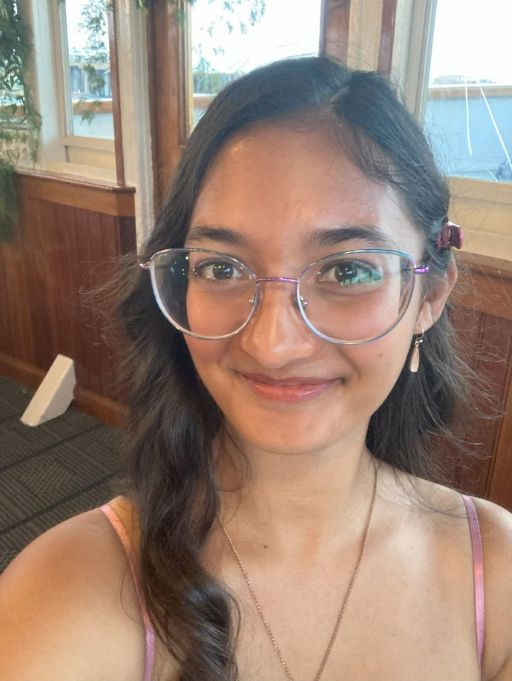

Hi! I'm Jessica...
I use she/her pronouns and you can reach me at jarisetty@gmail.com.! I am an English major at UMass Amherst pursuing a certification in Professional Writing and Technical Communication (PWTC), as well as Psychology minor. I’m interested in literary analysis, especially discussing how evolving symbolism reflects cultural changes. I also study American crime and criminal justice. These areas of interest intersect to support a critical thinking mindset and confronting assumptions about how the world functions, which is crucial to being an informed participant in a modern society where information moves fast and verification becomes an intentional, detailed process.
Literary Focus
I have always been a very voracious reader. In middle school, my teachers all knew me for carrying about 500-page paperbacks and having a new one each week. While the time I have to spend tearing through new novels has shrunk significantly since then, I still love settling down with a book and discussing new reads with friends. My favorite genres have always been of the speculative fiction type, although lately I have taken more of an interest in detailed sci-fi. While I am not a scientifically-oriented person by nature, theoretical technologies fascinate me. I also enjoy a wide range of poetry, especially that focused on human connection and humanity's relationship with the rest of the natural world. Among my favorite writers are Martha Wells, Mary Oliver, and Edgar Allen Poe (I also enjoy classic gothic literature). While I am not in the creative writing certificate program, I do enjoy writing poetry and have taken several creative writing classes.
Position Interest
I am interested in doing office and administrative work, which I consider support positions for more specialized roles like those of doctor or lawyer. I am good under pressure and managing solutions in emergency situations. I am well organized and have an excellent eye for aesthetics. While I have no desire to do the lifesaving, heroic work in healthcare or law, I believe myself capable of managing the less glamorous paperwork that is still necessary.
Work Skills
My most notable work experience was managing a summer camp program at a senior counselor level. I helped run two four-week sessions where I planned a variety of classes and activities, ensured both safety and enjoyment of participants, mediated interpersonal conflicts, and helped communication between various departments. I also have excellent analytical and creative thinking skills, demonstrated by my array of creative writing portfolios, research papers, and presentations.